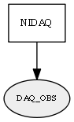

Global overview
All modules
All variables
All commands
Mission files
Pipelines
Variable: DAQ_OBS
Variable info:
Variable name
Short description
Who publishes it?
Who subscribes to it?
DAQ_OBS
NI DAQ readings as binary serializations of "CObservationRawDAQ" passed to std::vector<uint8_t> through ObjectToOctetVector()
NIDAQ
Variable graph:

Detailed description:
NI DAQ readings as binary serializations of "CObservationRawDAQ" passed to std::vector<uint8_t> through ObjectToOctetVector()
Page generated by
Mooxygen 1.1.0
at Thu Jan 22 11:30:21 2015